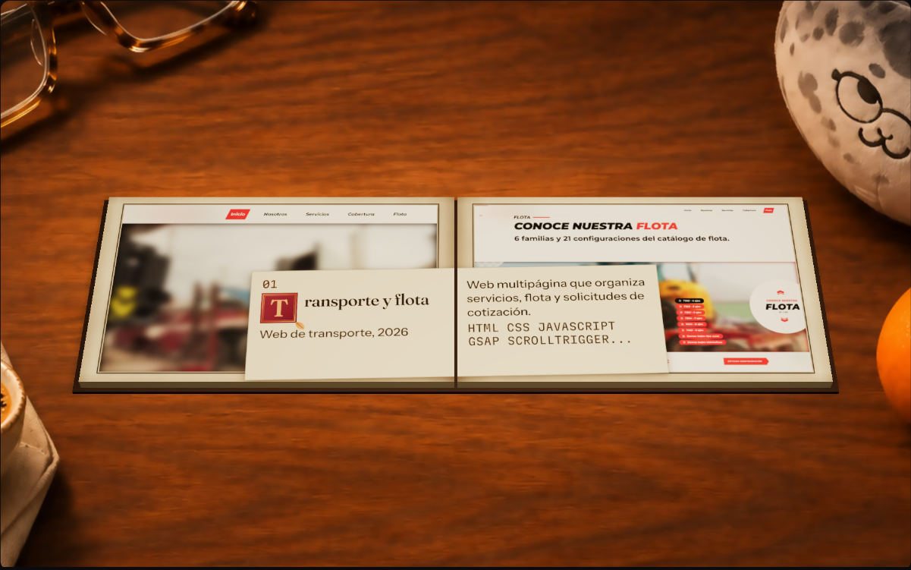
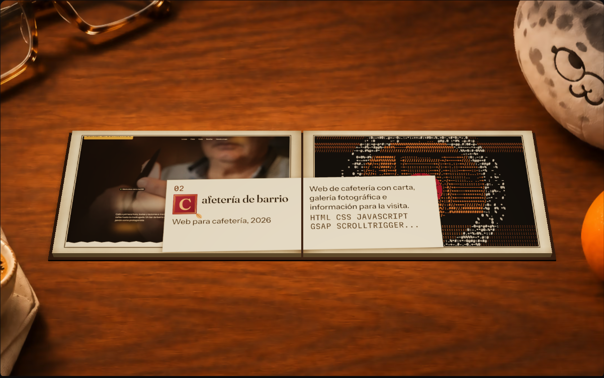
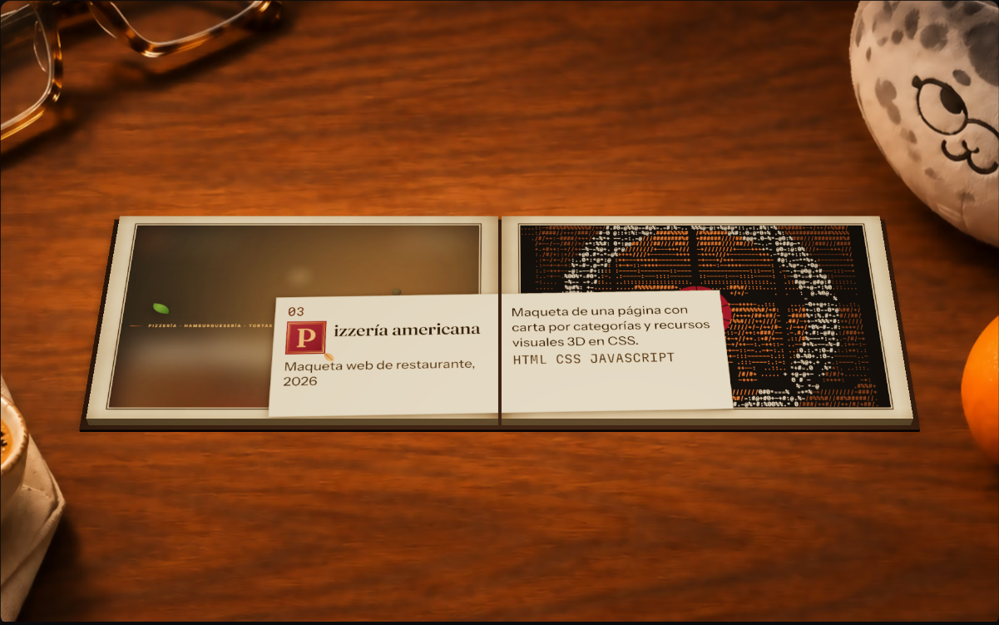
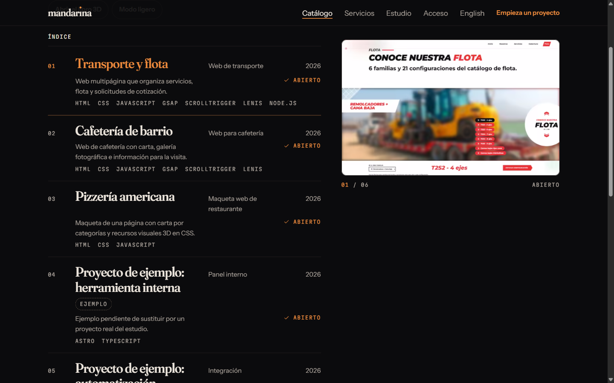
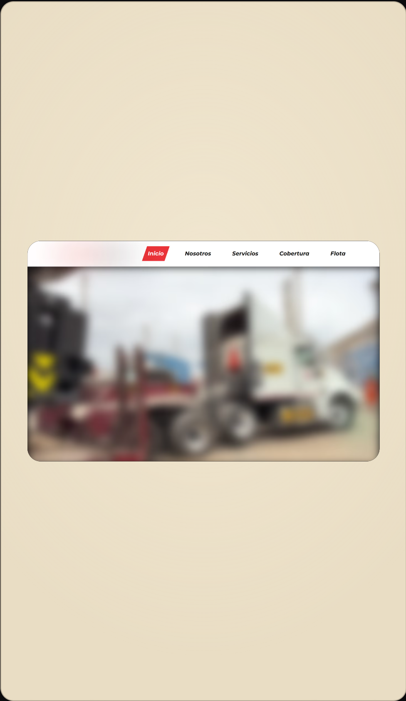
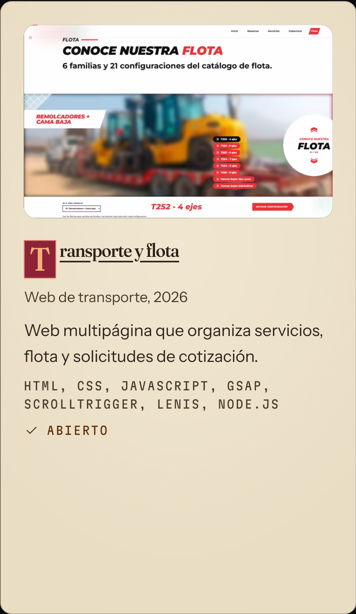
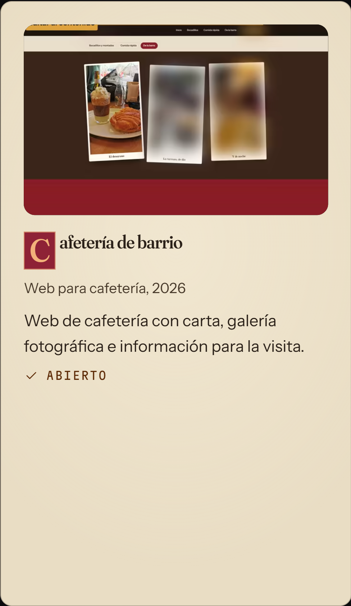
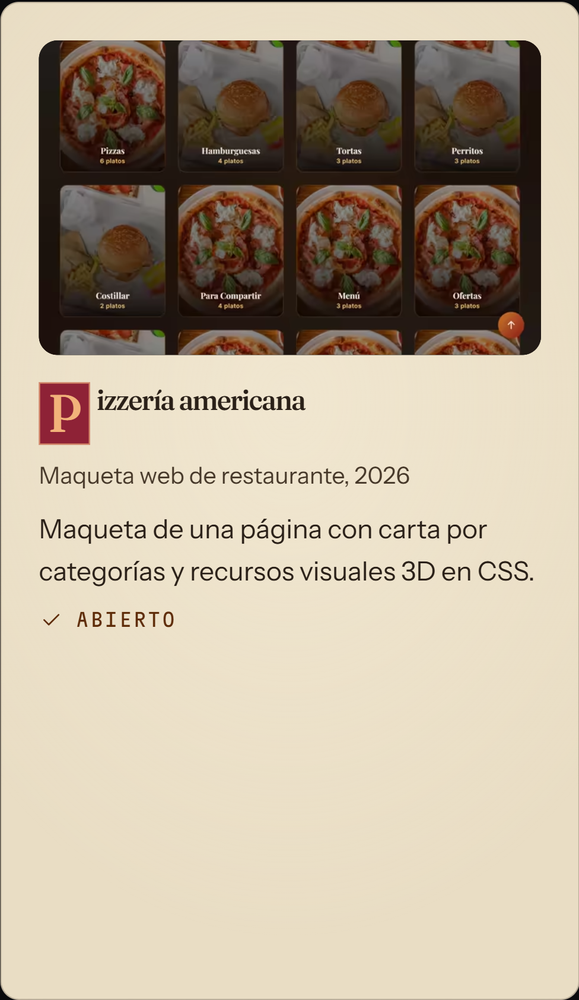

Los tres proyectos reales
Transporte y flota, Cafetería de barrio y Pizzería americana ya están en el catálogo, por delante de los ejemplos, sin nombres ni datos de los clientes. Transporte es el proyecto abierto del servicio web; los otros dos están sellados hasta el código y, tras él, muestran sus clips. Volver.
El libro, 1440 × 900






La lista


El teléfono, 412 × 823







